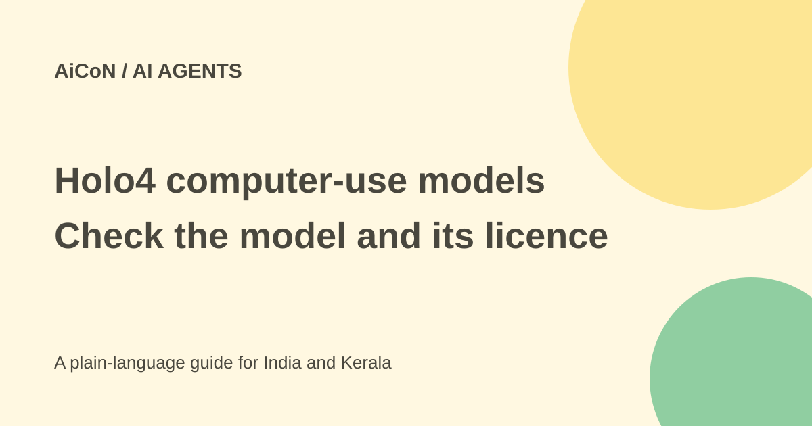

Holo4: computer-use models, API prices and licence differences
Holo4 can work through screens, code and tools. Its two main weight releases have different licences, and the free API offer on the current page is for an older model, not Holo4.

What is Holo4?
H company's 28 September 2026 release describes Holo4 as models for computer-use tasks across desktop, web and Android. They can use a graphical interface, code sandbox, MCP or API tools, depending on the workflow.
The main sizes are a 27B dense model and a 35B-A3B mixture-of-experts model with three billion active parameters. The company also announced Holotron4 Nano. A model that suggests clicks still needs a surrounding application to capture screens, execute actions and control permissions.
Two sizes, two weight licences
The current Holo4-27B Hugging Face card lists CC-BY-NC-4.0, a non-commercial licence. Holo4-35B-A3B lists Apache-2.0. The licence of the exact weights matters; do not call the whole Holo4 family commercially unrestricted.
The release offers BF16, FP8, NVFP4 and GGUF variants. Quantisation can reduce memory needs but may change quality and runtime support. Check the variant's files and licence rather than assuming every format behaves the same.
Current API price examples
The current Models API page lists Holo4 27B at USD 0.40 per million input tokens and USD 3 per million output tokens. At the approximate ₹96.43-per-dollar archive reference, that is about ₹38.57 and ₹289.29. Cached input is USD 0.04, about ₹3.86, when its caching conditions apply.
Holo4 35B-A3B is USD 0.30 input and USD 2 output per million tokens, about ₹28.93 and ₹192.86. Its listed cached-input rate is USD 0.03, about ₹2.89. Tax and conversion differences can add cost. Complete computer-use tasks may involve many calls and screenshots.
The marketing page lists a 256K context for both Holo4 models. Older Hub API documentation still lists only Holo3 models. Confirm actual model availability and limits in the current account or model listing before building a production integration.
What is actually free?
The current API page says rate-limited, no-card free access is for Holo3.1 35B-A3B. It separately offers pay-as-you-go for every model. That is not evidence of free Holo4 API access.
Public weight downloads are a different route from hosted API use. Self-hosting still needs memory, compute and compatible software. The dense 27B model is not a lightweight phone app, and its non-commercial weight licence needs review for business use.
Do not mix OSWorld scores
The vendor's page highlights 85.2% on OSWorld for Holo4 27B. Its detailed table reports 61.7% average partial score and 41.5% success for 27B on OSWorld 2.0. Different benchmarks and scoring methods must not be presented as the same number.
The same OSWorld 2.0 table lists USD 1.22 per task for 27B, about ₹117.64 at the archive reference, under its stated runs and prices. That is a vendor evaluation cost, not a fixed per-task product tariff. H publishes trajectories for inspection, but a replay does not guarantee the model will repeat the result on a changed site.
How to test computer use safely
- Choose the exact model and review its weight or API terms.
- Start in a test environment without sensitive accounts.
- Give it a clear task with a verifiable finish condition.
- Limit files, network destinations and credentials.
- Keep messages, payments, deletions and deployments behind review.
- Inspect the actual screen and final stored result.
- Measure failed actions, retries, total tokens and review time.
- Expand only when its errors and permissions are understood.
Privacy and hosting
The API page says local inference can keep screenshots and prompts on your network. That benefit depends on your whole setup: telemetry, remote tools and other connected services may still move data. Do not treat running weights locally as proof that no data leaves the environment.
For an Indian team, test the actual sites, languages and forms it will encounter. Browser changes, pop-ups and wrong accounts can matter more than a benchmark ranking. A confident screen action is not proof it used the intended recipient or paid the intended amount.
What changed since the original AiCoN post?
This guide adds exact licence differences, current API prices with labelled INR estimates and the older-model free-access boundary. It keeps the original 61.7% OSWorld 2.0 figure separate from the headline OSWorld score.
Frequently asked questions
Are both Holo4 weight releases Apache-2.0?
No. The 27B card is non-commercial CC-BY-NC-4.0.
Does the free API offer cover Holo4?
The checked page specifies Holo3.1.
Is a task benchmark cost a fixed charge?
No. Usage and retries change real costs.
Sources: Official Holo4 release · Current Models API prices · 27B model licence · 35B-A3B model licence · Hugging Face launch · Older API docs, lag noted. Checked 7 October 2026.